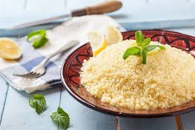

CusCus casero

Caracteristicas de la receta
- Plato para 2 personas
- Dificultad del plato: baja
- Tiempo de coccion: 30 minutos
Ingredientes y cantidades
| Ingredientes | Cantidades |
|---|---|
| Cuscus | un vaso de agua |
| Agua | Dos vasos |
| Curcuma | Unos dos toques |
| Sal | Un puñado |
Elaboracion de la receta
Se empieza llenando dos vasos de agua para echarlos a un cazo, se empieza a calentar a fuego lento.
Despues de unos 2 minutos se le echan la curcuma y la sal y cuando empieze a burbujear se le echa el cuscus.
Ahora se corta el fuego y se deja reposar hasta que el cuscus absorba en agua